En este tema repasaremos algunos de los instrumentos de medición más habituales en un laboratorio básico de Física. Realizaremos también algunos comentarios e indicaciones acerca de los informes que el estudiante debe realizar para cada práctica del laboratorio. En la última sección del tema, el estudiante encontrará un ejemplo de memoria de práctica que puede usar como referencia acerca de cómo debe escribirse correctamente un informe de laboratorio.
En cada una de las sesiones de laboratorio, se le entregará al estudiante un guión de la práctica a realizar con la finalidad de que pueda entender el funcionamiento del dispositivo experimental a utilizar, en donde se explicarán también los aspectos teóricos fundamentales involucrados. El estudiante debe leer el guión de la práctica antes del comienzo de la práctica. De esta forma, el tutor podrá responder a todas las dudas que surjan al estudiante antes de que comience a manejar los aparatos del experimento. Antes de empezar a medir y para evitar cualquier tipo de avería o problema, el estudiante debe preguntar al tutor cualquier duda que pueda tener sobre el montaje y funcionamiento de la práctica.
Tras finalizar la sesión de prácticas, el estudiante deberá colocar el material que haya empleado en su posición original, de forma que el siguiente grupo de prácticas pueda realizar la práctica sin perder el tiempo buscando los elementos y materiales. Debe limpiar, vaciar, secar, etc, todo el material que se haya utilizado, así como apagar y desconectar los aparatos eléctricos de la red eléctrica. En el caso de que sobre tiempo del disponible para la práctica, los estudiantes deben empezar a realizar las cuentas y cálculos pertinentes y a redactar los guiones de las prácticas. De esta manera, podrán preguntar
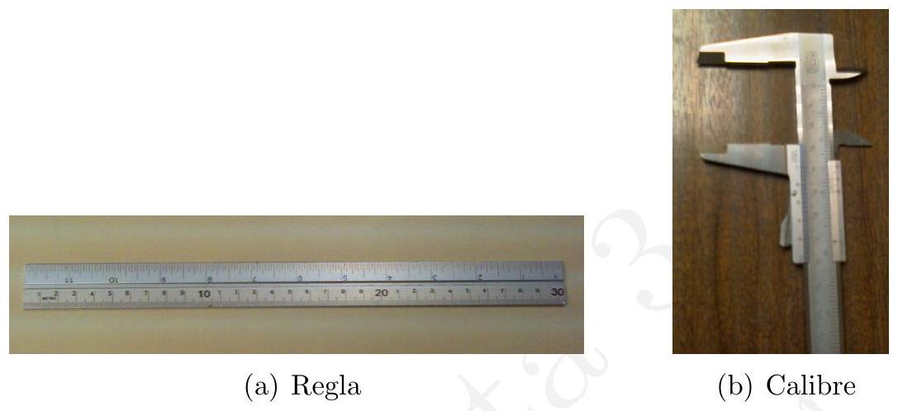
cuestiones al tutor de laboratorio si es necesario. Igualmente, los guiones de las prácticas tienen una serie de cuestiones que el estudiante debe contestar obligatoriamente y que puede empezar a pensar en este tiempo sobrante.
A continuación, repasaremos algunos de los aparatos de medición más habituales en un laboratorio de estudiantes. Antes de nada hemos de mencionar que, como sabemos, toda medición supone el uso de un instrumento que dispone de una escala. Estas escalas pueden ser de distintos tipos, pero en general son lineales, como por ejemplo reglas, termómetros, etc. Existen algunos instrumentos que añaden una segunda escala a la primera, permitiendo medir con un poco más de precisión como, por ejemplo, el calibre, que describiremos brevemente más adelante. Es posible encontrar otro tipos de escalas: circulares, no lineales, etc.
La regla de medir es el instrumento más simple con una escala lineal. A pesar de su sencillez, hemos de tener en cuenta que podemos estar midiendo de forma incorrecta debido al error de paralaje. Es decir, si la línea de visión no es perpendicular a la regla entonces la medición será incorrecta. Además, hay que tener cuidado con el error de cero, que puede aparecer porque el extremo de la regla esté gastado, porque se haya borrado o por cualquier otra causa.
A la hora de medir la longitud de elementos más pequeños y para los cuales necesitamos una mayor precisión, necesitamos una «regla» más elaborada.
En tal caso podemos usar el calibre (también llamado «vernier», «pie de metro», o caliper en inglés), como el que se muestra en la figura 6.1 (b). Este instrumento está compuesto por dos escalas, en donde la escala inferior añade un extra de precisión a la superior. Al final de la escala inferior suele aparecer la precisión con la que se mide, que suele ser habitualmente igual a 1 / 20 \mathrm{~mm}=0,05 \mathrm{~mm}.
La forma de medir con el calibre es relativamente sencilla: primero se coloca el objeto en el calibre; a continuación, anotamos los milímetros con la escala superior (pongamos que observamos 11 mm ) y para añadir más precisión observamos la escala inferior y buscamos aquella división que coincida en su posición de la forma más precisa posible con las separaciones de la parte superior. Una vez localizada esa división, observamos el número correspondiente en la escala inferior y ese número lo añadimos al que habíamos medido anteriormente en el primer decimal (si es que la precisión así nos lo indica). Supongamos que la coincidencia de las líneas es de tal forma que en la escala inferior se marca, por ejemplo, un 7. Si la medición anterior era 11 mm , tendríamos que nuestra medición con el calibre1 será 11,70 \pm 0,05 \mathrm{~mm}.
Otro instrumento imprescindible en el laboratorio es aquel que nos permita la medición de intervalos temporales. El instrumento más sencillo de este tipo es el cronómetro que, al igual que un reloj, sirve para medir intervalos de tiempo. Este instrumento nos permite iniciar o detener la medición cuando lo consideremos, e incluso podemos automatizarlo para que se pare o se inicie a través de otros mecanismos o aparatos de medición. En los cronómetros manuales, hemos de tener cuidado con el error de cero (la manivela que marca el cero puede estar ligeramente ladeada), así como con el tiempo de reacción del estudiante a la hora de encenderlo o detenerlo. Así, el error de medición puede aumentar bastante, siendo de 0,2 a 0,5 segundos solamente por el tiempo de reacción. Si en lugar de un cronómetro «analógico» usamos uno digital instalado a través, por ejemplo, de una app del móvil, hemos de tener en cuenta también el tiempo de reacción en el inicio y final de las mediciones. El estudiante siempre debe razonar adecuadamente la
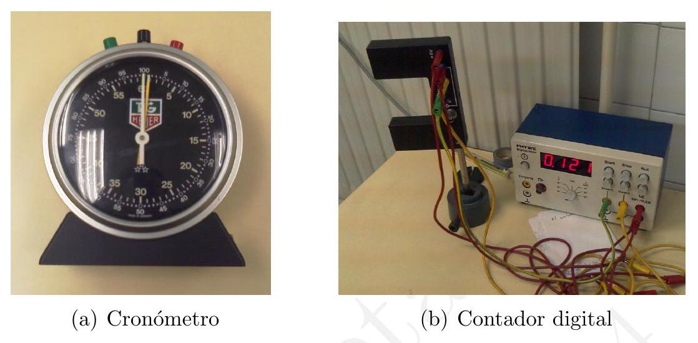
incertidumbre asociada al aparato de medición que esté usando, así como especificar las limitaciones que tiene el proceso de medida a través de los instrumentos que esté empleando.
A la hora de medir con mayor precisión el tiempo que tarda un objeto en entrar y salir de una posición (péndulo, ley de Hooke, etc), a menudo se emplea un detector conectado a un cronómetro digital, tal y como el que se muestra en la figura 6.2 (b). El funcionamiento de este montaje se basa en unos sensores fotoeléctricos que detectan el paso del objeto y que ponen en marcha el cronómetro digital. De esta forma, puede contarse el número de pasos del objeto de forma automática y medirse intervalos de tiempo con precisión de centésimas o milésimas de segundo.
Otro clásico de los laboratorios son las balanzas, que pueden ser de muchos tipos distintos y, por supuesto, sirven para medir la masa de los cuerpos. Entre las más antiguas, y que todavía pueden encontrarse en algunos laboratorios, están aquellas en las cuales la medición se hace colocando la masa en un extremo de una balanza y en el otro masas patrón, de manera que una vez que se logra el equilibrio, la aguja oscila en una raya central: al sumar las masas patrón, obtendremos la masa del objeto a medir. Otras balanzas funcionan colocando el peso en una balanza, midiéndose el peso a través de un brazo largo por el que se hace deslizar una pesa, que de acuerdo a su posición, equilibra las masas. Este tipo de sistemas suelen ser
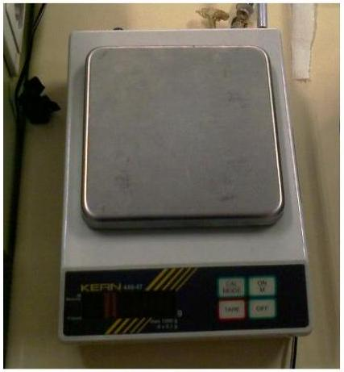
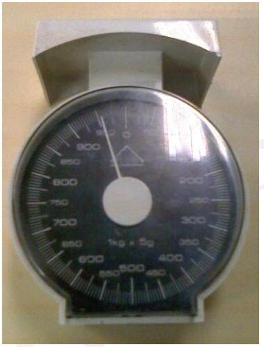
habituales, pero a menudo se emplean balanzas mucho más simples en su funcionamiento. En la figura 6.3 pueden verse dos balanzas típicas que pueden encontrarse en un laboratorio de estudiantes: la digital y la analógica. Su funcionamiento es el habitual: se coloca la masa sobre un soporte y el instrumento proporciona el resultado. Con las balanzas analógicas hemos de tener el mismo cuidado que con los cronómetros en el sentido del error de cero, ya que a menudo tienden a desajustarse con el uso.
El dinamómetro suele emplearse habitualmente en los experimentos de Mecánica y sirve para medir la fuerza que se ejerce sobre un cuerpo. Para medir la fuerza que se ejerce sobre un objeto en el extremo del aparato (donde suele haber un gancho), el dinamómetro se sostiene por el otro extremo, de forma que en el interior del aparato hay un resorte que, al alargarse por efecto de la fuerza, mueve una aguja en una escala lineal y nos indica la fuerza correspondiente. A la hora de medir es importante cuidar que el gancho no resbale o esté mal colocado. Así mismo, hay que evitar ángulos extraños al medir y procurar que la fuerza ejercida sobre el extremo sea en la dirección del resorte.
A la hora de hallar fuentes de error sistemático suele ser muy útil disponer de un nivel. Este es un pequeño instrumento muy habitual en carpintería o albañilería que permite tener información acerca de la verticalidad y horizontalidad de una determinada superficie. Su funcionamiento es muy sencillo: el nivel contiene una serie de tubos transparentes que contienen un líquido con una burbuja. La burbuja no tiene un diámetro mayor que dos líneas de referencia que hay dibujadas en el tubo. Así, se considera que la superficie está nivelada si al colocar el nivel sobre la misma, la burbuja aparece equidistante entre las dos líneas. En caso de que no sea así, seguramente se esté detectado algún tipo de error en las medidas que estamos realizando.
En aquellas prácticas relacionadas con la Termología y Termodinámica, el laboratorio suele disponer de un barómetro, en el cual puede consultarse la presión atmosférica. Normalmente al lado del mismo también hay un termómetro, de forma que así podemos saber la presión atmosférica y la temperatura ambiente del lugar donde estamos realizando las mediciones. Una presión atmosférica equivale a la altura de una columna de agua de unos 10 m de altura. Si el barómetro es de mercurio, lo habitual, la altura de la columna de mercurio al nivel del mar es de aproximadamente unos 760 mm , de ahí que digamos que 1 \mathrm{~atm}=760 \mathrm{~mm} de \mathrm{Hg}(=101,3 \mathrm{kPa}).
Por último, queremos mencionar una herramienta que se emplea asiduamente en las prácticas de Termología y Termodinámica, que es el baño termostático de circulación. Estos aparatos permiten mantener a una temperatura constante un objeto (no aislado térmicamente) que se encuentra inmerso en el interior de una cuba llena de agua. El agua se calienta a través de una resistencia y se redistribuye por la cuba mediante una bomba de circulación, asegurando que el objeto y la cuba en su interior se encuentran a una temperatura aproximadamente uniforme. Normalmente, hay un control de temperaturas manual, de forma que puede ajustarse la temperatura deseada, con más o menos precisión dependiendo del modelo de baño. Si el modelo del aparato es antiguo es posible que el control de temperatura no sea muy preciso o que directamente esté descalibrado. Es recomendable, por tanto, comprobar la temperatura del agua midiéndola con un termómetro, así como la del objeto que se está estudiando.
Los guiones deben ser realizados de forma individual. No se aceptarán guiones duplicados o realizados en grupo (un guión firmado por varios estudiantes), ni prácticas idénticas impresas por separado y firmadas por diferentes personas. El trabajo puede realizarse en grupos de 2 personas o de un máximo de 3, pero la realización de los guiones es un trabajo individual.
Las memorias deben contener los siguientes apartados o información:
Como hemos visto en anteriores temas, la presentación de los datos experimentales se realiza a través de tablas. En el caso de una medida directa, señalaremos claramente la magnitud física, las unidades de los datos obtenidos y el error de la medida individual (la precisión del aparato de medida). A continuación, obtendremos el valor esperado y el error absoluto asociado (indicando el procedimiento empleado para calcular este) y, por último, el resultado final (valor medio e incertidumbre) con el formato numérico correcto. Una vez expuestos los datos experimentales obtenidos, debe realizarse un análisis de los mismos para obtener las magnitudes pedidas a través de las gráficas y de regresiones lineales o mediante los métodos que el estudiante considere oportuno. El estudiante debe explicar la metodología empleada y hacer hincapié en cómo de correctos o válidos son los resultados obtenidos. No es tan importante a los efectos de esta asignatura obtener unos resultados experimentales excelentes como el realizar bien la medida experimental, los cálculos adecuadamente y saber analizar los resultados en los términos correctos.
En esta sección, mostramos un ejemplo ilustrativo de una memoria experimental. Debe verse como una guía no oficial que pretende dar una idea aproximada de cómo debería desarrollarse, punto por punto, la redacción de la memoria. En ella se incluyen tablas y gráficas que muestran visualmente lo aquí expuesto, así como un apéndice donde se detalla el cálculo de errores (en este caso, siguiendo un método de propagación cuadrática). No debe, en ningún caso, suponer que este ejemplo es la única manera de redactar un informe de prácticas. Una de las competencias que un estudiante de Física debe desarrollar es la de aprender a redactar una memoria científica del trabajo desarrollado en el laboratorio.
Particularidades como la disposición a dos columnas, la redacción en EATEX o el formato exacto de tablas y gráficas no constituyen, en ningún caso, una forma obligatoria para la elaboración de una memoria de prácticas. El estudiante puede emplear el formato y los medios informáticos que considere apropiados para la redacción de los informes, siempre que respete y mantenga las reglas que se han explicado a lo largo de este texto en cuanto a rigor y detalle en las explicaciones, análisis de datos, formato de gráficas y figuras, expresión de resultados, etc.
Insistimos, por tanto, en que esta memoria debe considerarse como un ejemplo de las infinitas formas posibles de redactarla que respeta, eso sí, cierta coherencia estructural.
Jaime Arturo de la Torre Rodríguez { }^{1}
{ }^{1} jatorre@fisfun.uned.es
Resumen. Los espectrómetros electrostáticos son una de las herramientas básicas para realizar medidas energéticas de haces de electrones. Nos proponemos estudiar el funcionamiento de un analizador electrostático esférico así como del conjunto experimental que permite obtener un espectro de energías a partir de la emisión termoiónica de un filamento sometido a una diferencia de potencial cuando el haz atraviesa un gas de argón. El análisis de los espectros permitirá realizar una calibración canal - energía y, a partir de ahí, podremos relacionar las energías de enlace asociadas al gas problema.
Desde el punto de vista de la detección de partículas cargadas, los mecanismos de interación relevantes son aquéllos por los que la partícula deposita energía en el medio por el que viaja. En ese sentido, la colisión inelástica con electrones atómicos es el efecto más importante, provocando exitación o ionización de los átomos del medio. La medida de estas variaciones energéticas entre un haz incidente y uno transmitido permiten obtener importantes propiedades atómicas de los elementos en estudio.
A priori existen multitud de fenómenos asociados con la deposición de energía por partículas cargadas dependiendo de la energía y del número atómico de las mismas. En esencia distinguiremos partículas «ligeras», con m \simeq m_{e^{-}}, \mathrm{y} «pesadas» ( m \gg m_{e^{-}}). En este último caso el poder de frenado viene dado con buena aproximación por la ecuación de Bloch[1], en tanto que para partículas ligeras el efecto bremsstrahlung es mayormente responsable del frenado de las partículas.
En cuanto a la energía de partículas cargadas, las colisiones inelásticas producen diferentes fenómenos. Si una partícula con energía E_{0} colisiona con un electrón ligado (que supondremos en reposo y con una energía de enlace E_{B} ), es claro que si E_{0} \geq E_{B} el blanco puede liberarse con una energía E \in\left(0, E_{0}-E_{B}\right), cuyos límites se corresponden en la partícula incidente con E^{\prime}=E_{0}-E_{B} y E^{\prime}=0. Este rango de valores da lugar entonces a un espectro continuo de energías, consecuencia de los infinitos ángulos relativos entre partícula incidente y blanco para el problema de los dos cuerpos. Realizando un barrido para cada ángulo de dispersión podríamos obtener la sección eficaz diferencial de dispersión. Por otro lado es claro que, fijado un ángulo de dispersión, la energía de la partícula detectada vendrá unívocamente determinada por la conservación del momento y la energía. Esto es, para un ángulo fijo de observación, el espectro obtenido será discreto. Para partículas altamente energéticas (del orden del MeV para electrones, por ejemplo) sería necesario hablar de conservación del cuadrivector momento energía[2].
Consideremos el caso concreto de un haz de electrones que incide sobre un gas diluido de { }^{40} \mathrm{Ar}. El efecto de la interacción de los electrones con el gas puede darse en forma de colisiones elásticas en las que el electrón no pierde energía cinética, colisiones inelásticas que liberan electrones ligados del gas y bremmsstrahlung o radiación de frenado, que modifica la energía del electrón interaccionante. El efecto bremsstrahlung será, no obstante, despreciable si el haz incidente no tiene suficiente energía (del orden de decenas de keV )[3]. Para colisiones elásticas obtendremos un espectro discreto de energías: si el electrón colisiona elásticamente la energía resultante es la misma que la incidente, esto es, la del haz. Para un ángulo de dispersión dado, el espectro obtenido para una colisión inelástica será igualmente discreto. En una colisión frontal, de hecho, se da la cesión máxima de energía al electrón ligado, de modo que la energía del electrón recolectado será la diferencia entre la del haz incidente y la de ligadura. Por último pueden darse fenómenos de colisión múltiple entre el haz incidente y el gas, obteniendo un espectro continuo de energías.
En suma, si hacemos interaccionar electrones de baja energía con un gas, como resultado de los múltiples procesos esperamos encontrar, en un espectro de energías: el haz transmitido, que no interacciona con el gas; colisiones elásticas, que conservan la energía del haz y, por tanto, se superpone al transmitido; colisiones inelásticas simples, que originan picos de energía discretos resultado de la diferencia de energía entre el haz transmitido y las energías de ligadura del sistema (idealmente tantos como diferentes niveles energéticos y energías de ligadura existan); y finalmente colisiones inelásticas múltiples, que dan lugar a un espectro continuo de energía.
La clave para realizar espectroscopía electrostática de electrones reside en el analizador electrostático de carga. El dispositivo que utilizaremos es un analizador esférico deflector (Fig. 1). Dos placas conductoras semiesféricas fabricadas en duraluminio, de distinto radio y mismo centro que forman un condensador son sometidas a una diferencia de potencial \Delta V. Las semiesferas tienen un radio medio R_{0}=\frac{1}{2}\left(R_{1}+R_{2}\right)=125 \mathrm{~mm} y aperturas de entrada y salida de diámetro d=1 \mathrm{~mm}.
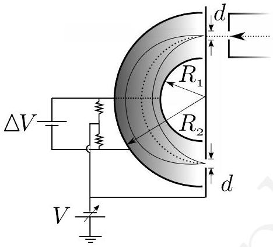
Figura 1: Analizador electrostático semiesférico y electrónica asociada.Al penetrar un haz de partículas cargadas entre las dos placas, la diferencia de potencial origina un campo eléctrico en la dirección radial que desvía dicho haz según \mathbf{F}=q \mathbf{E}. Modificando la diferencia de potencial entre las placas conseguimos que sólo las partículas que verifican una determinada condición de carga y energía inicial salgan del analizador; si todas las partículas tienen la misma carga, tenemos un discriminador de energías, esto es, una respuesta espectrométrica. Este tipo de analizadores presentan no obstante el inconveniente de que las trayectorias tienen una cierta dispersión, consecuencia de la apertura angular del orificio de entrada, que puede aproximarse por [5,6]
\Delta r=2 \sqrt{\alpha_{m}^{2}+\left(\frac{\Delta E}{E_{0}}\right)^{2}}
donde \alpha_{m} es la apertura angular del haz y la razón \Delta E / E la resolución del analizador. Además debe tenerse en cuenta la sensibilidad a campos magnéticos residuales, que debe corregirse con un correcto blindaje usando bobinas de Helmholtz o materiales de alta permeabilidad magnética (mumetal). Por último, protectores electrostáticos en las regiones críticas son también necesarios para conseguir un potencial uniforme en toda la estructura.
La energía de los electrones transmitidos a la salida del analizador depende directamente de la diferencia de potencial aplicada entre las placas según
E=E_{0}-E_{d}=k e \Delta V
donde E_{0} es la energía del haz incidente, E_{d} la energía de frenado aplicada al haz y k es un factor de calibración, función de la geometría y dimensiones del dispositivo [4].
El dispositivo experimental completo se muestra en la Fig. 2. Un cañón de electrones (representado por (A)) consistente en un filamento conductor sometido a una diferencia de potencial V_{0} \in[-1,-2] \mathrm{kV} genera, por emisión termoiónica, un haz de electrones de energía E_{0}=-e V_{0} \in[1,2] \mathrm{keV}. Esta energía será, precisamente, la energía cinética del haz primario. El resto de electrodos no hacen sino focalizar o redirigir el haz sin alterar la energía cinética del mismo.
La presencia de un campo magnético transversal ((B) en la figura) permite corregir la dirección del haz, si bien se mantiene a potencial cero por conveniencia. Las placas cuadrupolares (c) focalizan el haz de manera que se dirija hacia los orificios dispuestos a lo largo de la línea axial del experimento.
La lente deceleradora (D) permite hacer espectroscopía de un modo en que la resolución en energía se mantiene constante. En efecto si mantenemos el potencial entre las placas del analizador \Delta V constante, modificando la energía de deceleración conseguimos que, de todo el haz, sólo aquellos electrones con una energía determinada alcancen la salida del analizador. De este modo podemos hacer un barrido en energías sin más que modificar el potencial de frenado entre unos valores determinados.
La celda de gas (E) contiene una cierta cantidad de { }^{40} \mathrm{Ar} bajo control de un manómetro de precisión en un rango de presiones p \in(0,20) mbar. El detector multiplicador de electrones, (c), captura la carga a la salida del analizador y la procesa gracias a un sistema de adquisión de datos a un ordenador.
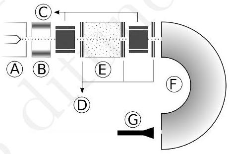
Figura 2: Dispositivo experimental completo. (A), cañón de electrones. (B), campo magnético transversal. (C) Placas electrostáticas cuadrupolares. (D), lentes deceleradoras. (E) celda de gas. (F), analizador electrostático de carga. (G), detector multiplicador de electrones.Nótese que el filamento produce una corriente del orden de mA . La emisión termoiónica producida, la colimación y demás elementos reducen la corriente recolectada a la salida por debajo del nA . Por ello se hace necesario el uso de un multiplicador channeltron (Fig. 3). Si fijamos un potencial positivo en la entrada del canal, los electrones que salgan del analizador se verán atraídos por él, que dispone de un potencial dependiente de la posición. Cada colisión dentro de la cavidad libera nuevos electrones que son atraídos hacia la salida del channeltron, logrando una amplificación de, aproximadamente, 10^{7} electrones por cada carga recolectada en la entrada del dispositivo.
Dado que necesitamos impulsos de tensión del orden del mV (para que sean reconocidos por la tarjeta de adquisión de datos), necesitamos una resistencia de carga R_{L} \sim 10 \mathrm{M} \Omega. Se hace necesario, entonces, el uso de un amplificador que aumente la potencia de la señal. Dicha función la realiza un sistema preamplificador - amplificador, que acopla la impedancia de salida del channeltron e impide las reflexiones.
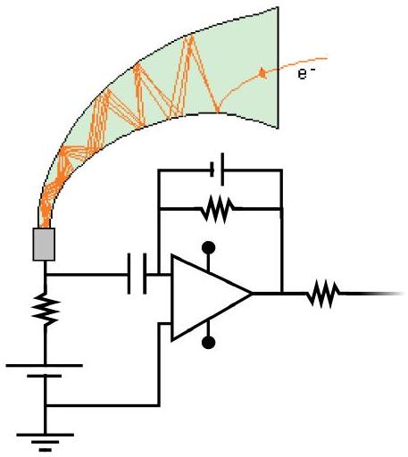
Figura 3: Channeltron y sistema amplificador con acoplo de impedancias y aumento de potencia. Imagen cortesía de Teach/Me Instrumentelle Analytik, Springer Verlag (2004).Todo el sistema se encuentra, además, conectado a unas bombas de vacío. Durante un primer paso una bomba primaria extrae la mayor parte del gas circundante. Una segunda bomba turbomolecular permite obtener unas condiciones de alto vacío con una presión p=(1,3 \pm 0,1) \cdot 10^{-7} mbar controlada por un manómetro de ionización. Esta segunda bomba no «aspira» (en un sentido tradicional) sino que captura átomos y moléculas que, por efecto de la disposición de las aspas que la forman, no pueden retornar al sistema. Al utilizar un vacío diferencial sobre la bomba primaria intentamos que no queden afectados el resto de elementos del experimento.
La ecuación 2 permite obtener el factor de calibración k \sin más que realizar un análisis para distintas energías del haz incidente E_{0}. En efecto, si mantenemos constante la diferencia de potencial entre las placas \Delta V=-(50,8 \pm 0,1) \mathrm{V}, podemos realizar un barrido en energías de frenado para encontrar el pico elástico. La Tabla I muestra dicho estudio, representado además en la Fig. 4.
Tabla I: Energías del haz incidente y energía de frenado en la que aparece el pico elástico para un sistema en vacío sin gas de argón. | E_{0}( \pm 1 \mathrm{eV}) | E_{d}( \pm 0,01 \mathrm{eV}) | | —: | —: | | 1000 | 883,46 | | 1500 | 1375,33 | | 2000 | 1885,83 |
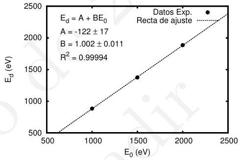
Figura 4: Energías del haz incidente y de frenado para el pico elástico. En línea discontinua, la recta de mejor ajuste.Un análisis de regresión, cuyos resultados se encuentran en la misma Fig. 4, permite encontrar los parámetros de mejor ajuste del sistema. Por un lado la relación entre E_{0} y E_{d} a través de la pendiente B=1,002 \pm 0,011, cuyo resultado era esperable por la Eq. 2. Por otro, la ordenada en el origen obtenida como A=-k e \Delta V=-(122 \pm 17) eV . A partir de las medidas de \Delta V= cte es inmediato obtener el factor de calibración (ver Apéndice A).
k=2,4 \pm 0,3
Con una tarjeta de adquisición de datos podemos realizar un barrido en energías de frenado, obteniendo de este modo un espectro continuo de energías. El problema de realizar este método es que se hace necesaria una calibración canal - energía. En efecto, lo que obtenemos es una relación unívoca entre canal y número de partículas detectadas. Podemos soslayar esto sin más que realizar una calibración a partir de una energía conocida. O sea, dado que la relación canal - energía es lineal, podríamos buscar el canal asociado con el pico elástico y, de ahí, inferir la calibración. Dada la naturaleza estadística del proceso este procedimiento arrojaría demasiado error en la medida, de ahí que se prefiera realizar un segundo método.
Partiendo de una energía del haz incidente E_{0}=1,5 keV podemos buscar el pico elástico (correspondiente a una energía de frenado determinada). Si realizamos un barrido desde una energía mayor que la del pico elástico, en la pantalla podremos observar un espectro de naturaleza gaussiana. Pasada la zona elástica podemos reducir la energía incidente a E=E_{0}-\Delta E, con \Delta E=10 \mathrm{eV}. De este modo, pasado un tiempo, volverá a aparecer la zona elástica asociada a esa energía incidente. Realizando este procedimiento de manera iterada para E=E_{0}-i \Delta E con i=1,2, \ldots podemos obtener un espectro completo que sí nos dará una calibración óptima. La Fig. 5 muestra el resultado de esta técnica para i=0,1, \ldots, 10.
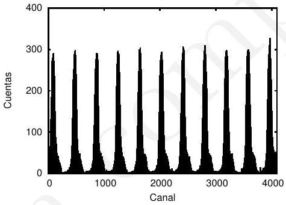
Figura 5: Espectro de electrones detectados en función del canal para un barrido en energías del haz incidente E=E_{0}- i \Delta E, con E_{0}=1,5 \mathrm{keV}, \Delta E=10 \mathrm{eV} e i=0,1,2, \ldots, 10.Dado el comportamiento gaussiano de los picos, podemos realizar un ajuste a dicha curva para cada uno de los picos. De este modo la regresión, en cada pico, nos dará el valor medio de la distribución; este valor será el usado para establecer la calibración canal - energía. La Tab. II muestra los resultados obtenidos en dicha calibración. La Fig. 6 permite ver la recta de mejor ajuste para la calibración canal - energía.
Obtenida la calibración es posible analizar un espectro de energías determinado. Si introducimos en la cámara de gas una cierta cantidad de { }^{40} \mathrm{Ar} a una presión controlable p=(13,9 \pm 0,1) mbar (medido mediante un manómetro capacitivo), es posible observar la interacción de los electrones con el gas de argón y determinar las energías de enlace del gas. La Figura 7 es el espectro de energías obtenido según este procedimiento para una energía incidente E_{0}=1,5 \mathrm{keV}. Nótese que se utiliza como variable
Tabla II: Energías del haz incidente y canal en el que se observa el pico elástico. Este último se obtiene a partir de una regresión gaussiana. | E_{0}( \pm 1 \mathrm{eV}) | Canal ( \pm 2) | | :— | :— | | 1500 | 89 | | 1490 | 476 | | 1480 | 865 | | 1470 | 1254 | | 1460 | 1641 | | 1450 | 2027 | | 1440 | 2416 | | 1430 | 2805 | | 1420 | 3193 | | 1410 | 3581 | | 1400 | 3966 |
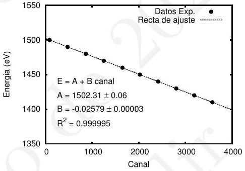
Figura 6: Calibración canal - energía para un barrido de la energía del haz incidente.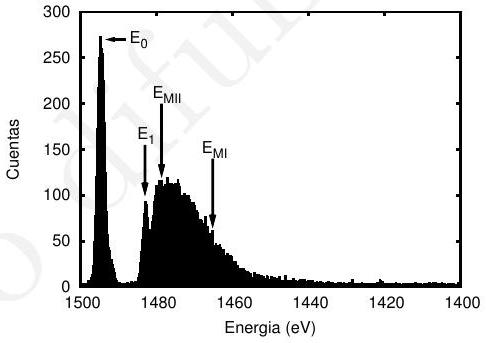
Figura 7: Espectro de energías para electrones con una energía de haz incidente E_{0}=1,5 \mathrm{keV} sobre un gas de { }^{40} \mathrm{Ar} sometido a una presión p=(13,9 \pm 0,1) mbar.independiente la energía a partir de la calibración anterior.
De la figura puede detectarse, en primer lugar, la aparición del pico elástico superpuesto al haz transmitido. La energía de dicho pico se obtiene mediante ajuste gaussiano (ver Fig. 8)
E_{0}=(1494,480 \pm 0,006) \mathrm{eV}
Nótese que, al margen del error consignado por el ajuste, esta medida supone un error relativo \epsilon_{r} \simeq 0,5 \% respecto del valor teórico E_{0}=1500 \mathrm{eV}, lo que da cuenta de la bondad de los resultados. A partir de la medida de la anchura a mitad de altura (FWHM) podemos determinar la dispersión en energías
\sigma=\frac{\mathrm{FWHM}}{2 \sqrt{2 \ln 2}} \simeq(0,48 \pm 0,02) \mathrm{eV}
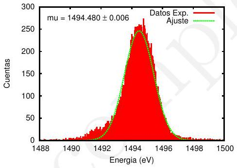
Figura 8: Espectro de energías para electrones en la proximidad del pico elástico, se incluye ajuste gaussiano.Podemos seguir el mismo procedimiento para el análisis del pico inelástico. Teniendo en cuenta la superposición con la región continua de modo que restemos la contribución de la línea base obtenemos una energía
E_{1}=(1482,74 \pm 0,02) \mathrm{eV}
Nótese que la diferencia de energía E_{0}-E_{1}=(11,74 \pm 0,02) \mathrm{eV} coincide, aproximadamente, con la energía de ligadura de la última capa del átomo de argón en su configuración 3 \mathrm{p} 5\left(2 \mathrm{P}^{\circ} \frac{1}{2}\right) 4 \mathrm{~s}. Esto es, lo que detectamos son los electrones secundarios liberados en colisiones frontales con el haz incidente, que poseen una energía E= E_{0}-E_{B}.
La tabla III muestra las energías de enlace para los niveles superiores del argón[7], tanto su determinación teórica como las diferencias de energía correspondientes a los diferentes niveles mostrados en la Fig. 8. Comparativamente, se observa que el error permanece dentro del margen del 1 \%.
Tabla III: Energías de enlace del argón según [7], energías detectadas en el espectro y error relativo. | Configuración | E_{\text {teo }}(\mathrm{eV}) | E_{\exp }(\mathrm{eV}) | \epsilon_{r} | | :— | —: | —: | —: | | \mathrm{M}_{\mathrm{III}}\left(3 \mathrm{p}_{3 / 2}\right) | 15,7 | (no distinguible) | | | \mathrm{M}_{\mathrm{II}}\left(3 \mathrm{p}_{1 / 2}\right) | 15,9 | 15,87 \pm 0,02 | 1,2 \% | | \mathrm{M}_{\mathrm{I}}(3 \mathrm{~s}) | 29,3 | 29,31 \pm 0,02 | 0,03 \% |
La espectroscopía electrostática de electrones muestra un enorme potencial para caracterizar los niveles energéticos de un gas diluido. Utilizando un haz de electrones de baja energía podemos distinguir distintas energías de enlace a partir de las energías detectadas.
De los distintos tipos de analizadores electrostáticos, el deflector esférico se muestra muy versátil para trabajar en un amplio rango de energías. Establecida una diferencia de potencial fija, variando el potencial de frenado es posible realizar un barrido en energías pudiendo realizar entonces espectroscopia.
Debe hacerse notar, no obstante, las dificultades propias de un diseño experimental: la necesidad de un correcto blindaje magnético, homogeneidad en el campo creado, correcta focalización, etc. Los resultados obtenidos, no obstante lo anterior, demuestran la efectividad del método utilizado para obtener un espectro de energías fiable. [1] H. Bethe y J. Ashkin, Experimental Nuclear Physics, ed. E. Segré, J. Wiley, New York (1953). [2] D. J. Griffiths, Introduction to Electrodynamics, 3rd Ed., Prentice Hall, New Jersey (1999). [3] G. F. Knoll, Radiation Detection and Measurement, 3rd Ed., J. Wiley, New York (2000). [4] D. Roy y D. Tremblay, Design of electron spectrometers, Rep. Prog. Phys. 53, 1621 - 1674 (1990). [5] Y. Delâge y J.D. Carrete, Spectromètres Electrostatiques, Partie I, Can. J. Phys. 49, 2118 - 2131 (1971). [6] D. Roy. y J.D. Carrete, Spectromètres Electrostatiques, Partie III, Can. J. Phys. 49, 2138 - 2159 (1971). [7] M. Cardona y L. Ley, Eds., Photoemission in Solids I: General Principles Springer-Verlag, Berlin (1978).
Obtenida la recta de mejor ajuste E_{d}=A+B E_{0} a partir de los datos de la Tabla I
E_{d}=-122+1,002 E_{0}
y considerando la expresión teórica
E_{0}-E_{d}=k e \Delta V
es inmediato obtener la relación
k=\frac{-A}{e \Delta V}=\frac{122}{50,8} \simeq 2,402
El error en la medida se realiza por propagación cuadrática según la expresión
\sigma_{k}=\sqrt{\left|\frac{\partial k}{\partial B}\right|^{2} \sigma_{B}^{2}+\left|\frac{\partial k}{\partial e \Delta V}\right|^{2} \sigma_{e \Delta V}^{2}}=\sqrt{\left(\frac{1}{e \Delta V}\right)^{2} \sigma_{B}^{2}+\left(\frac{B}{(e \Delta V)^{2}}\right)^{2} \sigma_{e \Delta V}^{2}} \simeq 0,3347
De modo que, finalmente
k \simeq(2,4 \pm 0,3)
Es muy recomendable que el estudiante compruebe el funcionamiento de este instrumento mediante un «calibre virtual» antes de ir al laboratorio, como el que puede encontrar en diferentes páginas web o en apps para smartphones.↩︎